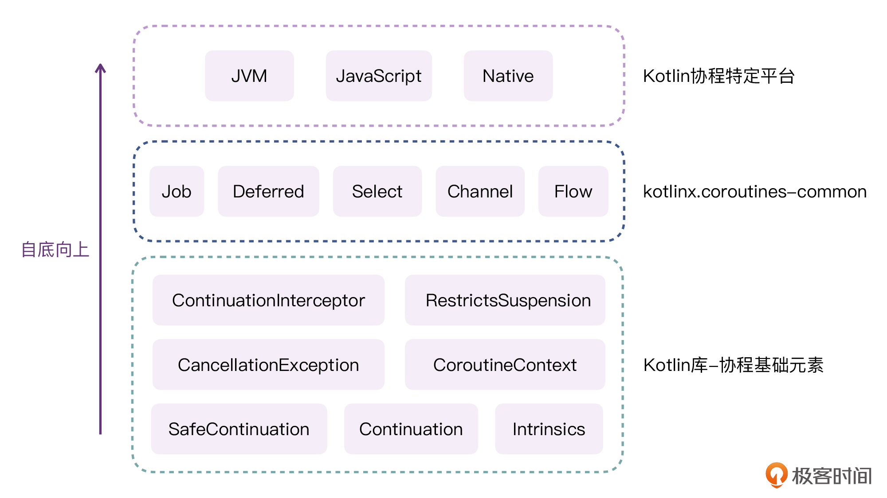

Audio加餐五丨深入理解协程基础元素
你好，我是朱涛。
在上一讲当中，我们深入研究了 Kotlin 挂起函数的原理，实际更多的是在了解协程的“基础层”。而接下来，我们将会开始研究协程启动的原理，探索协程的“中间层”。
所以今天，我还是决定来一次加餐，带你系统深入地认识一下 Kotlin 协程当中的基础元素。等你对协程的基础层有了深入认识以后，下节课研究协程启动原理就会轻松一些了。
协程基础元素
通过第 26 讲我们现在已经知道，Kotlin 协程的基础元素大致有这些：Continuation、SafeContinuation、CoroutineContext、CombinedContext、CancellationException、intrinsics。

其中的 CoroutineContext、CancellationException 我都已经介绍过了，另外的 CombinedContext，其实就是 CoroutineContext 的一个实现类，而 SafeContinuation 则是 Continuation 的实现类。
所以，在整个协程基础元素当中，我们最需要关心的，其实就是 Continuation 和 intrinsics。
在 intrinsics 里，有一个重要的高阶函数 suspendCoroutineUninterceptedOrReturn{}，我们后面会讲到它。至于 Continuation，虽然我们在前面已经介绍过它是什么，但还没有系统了解过它的用法，所以接下来，我们就先系统了解一下 Continuation 的两种用法。
Continuation 到底该怎么用？
// 代码段1
suspend fun <T : Any> KtCall<T>.await(): T =
suspendCancellableCoroutine { continuation ->
val call = call(object : Callback<T> {
override fun onSuccess(data: T) {
// 注意这里
continuation.resume(data)
}
override fun onFail(throwable: Throwable) {
// 注意这里
continuation.resumeWithException(throwable)
}
})
continuation.invokeOnCancellation {
println("Call cancelled!")
call.cancel()
}
}当我们想要实现挂起函数的时候，可以使用 suspendCoroutine{}、suspendCancellableCoroutine{}这两个高阶函数，在它们的 Lambda 当中，我们可以使用它暴露出来的 continuation 对象，把程序的执行结果或异常传到外部去。
这种方式，往往是用于实现挂起函数内部逻辑的。
比如说，我们可以用 suspendCoroutine{}写一个更加简单的例子：
// 代码段2
fun main() = runBlocking {
val result = getLengthSuspend("Kotlin")
println(result)
}
suspend fun getLengthSuspend(text: String): Int = suspendCoroutine { continuation->
thread {
// 模拟耗时
Thread.sleep(1000L)
continuation.resume(text.length)
}
}
/*
输出结果：
等待1秒
6
*/以上代码里，我们是使用 suspendCoroutine{}实现了挂起函数，然后在它的内部，我们使用 continuation.resume() 的方式，传出了挂起函数的返回值。
可能你会觉得奇怪，为什么以 continuation.resume() 这样异步的方式传出结果以后，挂起函数就能接收到结果呢？其实，当我们把 main() 函数当中的调用逻辑改一下，这一切就会清晰明了。
// 代码段3
// 变化在这里
fun main() {
val func = ::getLengthSuspend as (String, Continuation<Int>) -> Any?
func("Kotlin", object: Continuation<Int>{
override val context: CoroutineContext
get() = EmptyCoroutineContext
override fun resumeWith(result: Result<Int>) {
println(result.getOrNull())
}
})
// 防止程序提前结束
Thread.sleep(2000L)
}
suspend fun getLengthSuspend(text: String): Int = suspendCoroutine { continuation->
thread {
// 模拟耗时
Thread.sleep(1000L)
continuation.resume(text.length)
}
}
/*
输出结果：
等待1秒
6
*/可以看到，在这段代码里，我们借助上节课的知识，把 getLengthSuspend() 这个函数强转成了带有 Continuation 的函数类型，然后通过匿名内部类的方式，创建了一个 Continuation 对象传了进去。最终，程序的执行结果和代码段 2 是一致的。
挂起函数的本质，就是 Callback!
那么现在，就让我们把 Continuation 改为 Callback，看看代码会变成什么样子。
// 代码段4
// 变化在这里
fun main() {
func("Kotlin", object: Callback<Int>{
override fun resume(result: Int) {
println(result)
}
})
// 防止程序提前结束
Thread.sleep(2000L)
}
fun func(text: String, callback: Callback<Int>) {
thread {
// 模拟耗时
Thread.sleep(1000L)
callback.resume(text.length)
}
}
interface Callback<T> {
fun resume(value: T)
}
/*
输出结果：
等待1秒
6
*/可见，当我们把 Continuation 改成 Callback 以后，整个代码就变成了我们曾经最熟悉的异步回调代码了。调用方，可以使用匿名内部类创建 Callback 用于接收异步结果；异步函数内部，使用 callback.resume() 将结果传出去。
综上所述，Kotlin 协程当中的 Continuation，作用其实就相当于 Callback，它既可以用于实现挂起函数，往挂起函数的外部传递结果；也可以用于调用挂起函数，我们可以创建 Continuation 的匿名内部类，来接收挂起函数传递出来的结果。
所以在这里，我们也就可以轻松回答上节课的思考题了：
我们都知道挂起函数是 Kotlin 协程里才有的概念，请问，Java 代码中可以调用 Kotlin 的挂起函数吗？比如，下面这个函数，我们可以在 Java 当中调用吗？
// 代码段5
// 需要在Java中调用的Kotlin挂起函数
object SuspendFromJavaExample {
// 在Java当中如何调用这个方法？
suspend fun getUserInfo(id: Long):String {
delay(1000L)
return "Kotlin"
}
}答案当然是肯定的，Java 当中调用挂起函数的方式，其实跟前面的代码段 3 是一样的：
// 代码段6
public static void main(String[] args) throws InterruptedException {
SuspendFromJavaExample.INSTANCE.getUserInfo(100L, new Continuation<String>() {
@NotNull
@Override
public CoroutineContext getContext() {
return EmptyCoroutineContext.INSTANCE;
}
@Override
public void resumeWith(@NotNull Object o) {
System.out.println(o+"");
}
});
// 防止程序提前结束
Thread.sleep(2000L);
}
/*
输出结果
Kotlin
*/在上面的代码中，我们只是把代码段 3 的思想应用到了 Java 代码中而已，唯一需要注意的，就是：在 Java 当中访问 Kotlin 的 object 单例，是需要加上 INSTANCE 后缀的。这一点，我们在第 5 讲当中就已经了解过。
看到这里，可以发现，我们在实现挂起函数逻辑的时候，总是离不开 suspendCoroutine{}、suspendCancellableCoroutine{}。其实，这两个高阶函数也是 Kotlin 协程的基础元素，让我们来进一步认识这两个高阶函数。
suspendCoroutineUninterceptedOrReturn
实际上，suspendCoroutine{}、suspendCancellableCoroutine{}这两个高阶函数的实现原理是类似的，所以这里我们就主要解释下 suspendCoroutine{}。
// 代码段7
public interface Continuation<in T> {
public val context: CoroutineContext
public fun resumeWith(result: Result<T>)
}
public suspend inline fun <T> suspendCoroutine(crossinline block: (Continuation<T>) -> Unit): T {
// 注意这里
return suspendCoroutineUninterceptedOrReturn { c: Continuation<T> ->
val safe = SafeContinuation(c.intercepted())
block(safe)
safe.getOrThrow()
}
}在上面的代码中，我们第一眼就能看到一个名字特别长的高阶函数 suspendCoroutineUninterceptedOrReturn{}。它其实就是实现 suspendCoroutine{}的关键。除了它之外，其他部分的代码都很好理解：
SafeContinuation(c.intercepted()) 这行代码的作用，就是把原本的 Continuation 包裹一遍。
block(safe) 这行代码，其实就是在调用 Lambda 当中的逻辑。
safe.getOrThrow()，就是在取出 block(safe) 的运行结果，我们在上节课也提到过，Continuation 当中是可以存储 result 的。这个 Result 可能是正确的结果，也可能是异常。
下面我们重点来看看 suspendCoroutineUninterceptedOrReturn{}这个高阶函数的作用。如果你去看它的源代码，那你看到的大概率会是这样的：
// 代码段8
public suspend inline fun <T> suspendCoroutineUninterceptedOrReturn(crossinline block: (Continuation<T>) -> Any?): T {
contract { callsInPlace(block, InvocationKind.EXACTLY_ONCE) }
throw NotImplementedError("Implementation of suspendCoroutineUninterceptedOrReturn is intrinsic")
}大部分人看到这样的代码可能都会觉得奇怪：为什么这个高阶函数的源代码会是抛出异常呢？
在前面的加餐二“表达式思维”里，我其实有做过说明，如果你还有印象的话，应该就能理解这样的代码也是符合函数返回值的规范的。不过，如果它总是抛异常的话，我们用 suspendCoroutine{}写代码的时候，为什么不会产生崩溃呢？这个异常信息里的提示内容又是什么意思？
“Implementation of suspendCoroutineUninterceptedOrReturn is intrinsic.”
实际上，理解这句话的关键在于“intrinsic”这个单词，它有“固有”“本质”的意思，不过在上面这句话的语境下，这里的 intrinsic 其实是指编译器领域的一个术语，我们可以把它理解为“内建”。因此，上面我们看到的异常提示信息的意思就是：suspendCoroutineUninterceptedOrReturn 是一个编译器内建函数，它是由 Kotlin 编译器来实现的。
为了不偏离这节课的主题，这里我们就不去深究 Kotlin 编译器当中的逻辑了，感兴趣的话你可以自行研究这个链接。接下来，我们可以换一个角度，写一些 Demo 代码，通过运行调试来看看这个内建函数的功能和作用。
让我们先来看看 suspendCoroutineUninterceptedOrReturn 这个高阶函数的参数，它会接收一个 Lambda，类型是(Continuation<T>) -> Any?，经过上节课的学习，你是否觉得这个类型有些眼熟呢？这里的“Any?”类型，其实就能代表当前这个挂起函数是否真正挂起。
因此，我们可以写出下面这样的代码：
// 代码段9
fun main() = runBlocking {
val result = testNoSuspendCoroutine()
println(result)
}
private suspend fun testNoSuspendCoroutine() = suspendCoroutineUninterceptedOrReturn<String> {
continuation ->
return@suspendCoroutineUninterceptedOrReturn "Hello!"
}
/*
输出结果：
Hello!
*/在这段代码中，我们直接使用 suspendCoroutineUninterceptedOrReturn 实现了挂起函数，并且，在它的 Lambda 当中，我们并没有调用 continuation.resume()，而是直接返回了结果“Hello!”。根据程序的运行结果，我们可以看到，在挂起函数的外部确实也可以接收到这个结果。
那么这时候，如果我们把上面的代码反编译一下，会看到类似这样的代码：
// 代码段10
private static final Object testNoSuspendCoroutine(Continuation $completion) {
int var2 = false;
if ("Hello!" == IntrinsicsKt.getCOROUTINE_SUSPENDED()) {
DebugProbesKt.probeCoroutineSuspended($completion);
}
return "Hello!";
}所以，从反编译的结果来看，testNoSuspendCoroutine() 这个函数其实就是一个伪挂起函数，它的内部并不会真正挂起。这样，当我们从外部调用这个函数的时候，这个函数会立即返回结果“Hello!”。
而这时候，我们可以再写一个真正的挂起函数：
// 代码段11
fun main() = runBlocking {
val result = testSuspendCoroutine()
println(result)
}
private suspend fun testSuspendCoroutine() = suspendCoroutineUninterceptedOrReturn<String> {
continuation ->
thread {
Thread.sleep(1000L)
continuation.resume("Hello!")
}
return@suspendCoroutineUninterceptedOrReturn kotlin.coroutines.intrinsics.COROUTINE_SUSPENDED
}
/*
输出结果：
等待1秒
Hello!
*/这一次，我们并没有使用 return 返回结果，而是使用了 continuation.resume()。通过程序运行结果，我们可以看到挂起函数的外部也能接收到这个结果。然后我们也再来反编译一下，看看它对应的 Java 代码：
// 代码段12
private static final Object testSuspendCoroutine(Continuation $completion) {
int var2 = false;
// 1
ThreadsKt.thread$default(false, false, (ClassLoader)null, (String)null, 0, (Function0)(new CoroutineBasicElementsKt$testSuspendCoroutine$2$1($completion)), 31, (Object)null);
// 2
Object var10000 = IntrinsicsKt.getCOROUTINE_SUSPENDED();
if (var10000 == IntrinsicsKt.getCOROUTINE_SUSPENDED()) {
DebugProbesKt.probeCoroutineSuspended($completion);
}
// 3
return var10000;
}
final class CoroutineBasicElementsKt$testSuspendCoroutine$2$1 extends Lambda implements Function0 {
final Continuation $it;
public Object invoke() {
this.invoke();
return Unit.INSTANCE;
}
public final void invoke() {
// 4
Thread.sleep(1000L);
Continuation var1 = this.$it;
String var2 = "Hello!";
Companion var3 = Result.Companion;
var1.resumeWith(Result.constructor-impl(var2));
}
CoroutineBasicElementsKt$testSuspendCoroutine$2$1(Continuation var1) {
super(0);
this.$it = var1;
}
}以上代码中一共有 4 个注释，我们一个个看：
注释 1、4，创建了一个新的线程，执行了 thread{}当中的代码。
注释 2，将 var10000 赋值为 COROUTINE_SUSPENDED 这个挂起标志位。
注释 3，返回挂起标志位，代表 testSuspendCoroutine() 这个函数会真正挂起。
所以，这两个例子其实也从侧面证明了我们在上节课当中的结论：
由于 suspend 修饰的函数，既可能返回 CoroutineSingletons.COROUTINE_SUSPENDED，也可能返回实际结果，甚至可能返回 null，为了适配所有的可能性，CPS 转换后的函数返回值类型就只能是 Any? 了。
那么现在，我们也就可以总结出 suspendCoroutineUninterceptedOrReturn{}这个高阶函数的作用了：它可以将挂起函数当中的 Continuation 以参数的形式暴露出来，在它的 Lambda 当中，我们可以直接返回结果，这时候它就是一个“伪挂起函数”；或者，我们也可以返回 COROUTINE_SUSPENDED 这个挂起标志位，然后使用 continuation.resume() 传递结果。
相应的，suspendCoroutine{}、suspendCancellableCoroutine{}这两个高阶函数，只是对它的一种封装而已。
小结
这节课，我们学习了 Kotlin 协程当中与挂起函数密切相关的两个基础元素，Continuation、suspendCoroutine{}。
Continuation 是整个协程当中最重要的基础元素，我们可以将其看做是一个 Callback。它主要有两个使用场景，一种是在实现挂起函数的时候，用于传递挂起函数的执行结果；另一种是在调用挂起函数的时候，以匿名内部类的方式，用于接收挂起函数的执行结果。借助这种思路，我们也完全可以在 Java 当中调用挂起函数。
当我们想要实现挂起函数的时候，我们往往需要使用 suspendCoroutine{}、suspendCancellableCoroutine{}这两个高阶函数。它们两个都是对 suspendCoroutineUninterceptedOrReturn{}的封装，这个高阶函数的作用其实就是暴露挂起函数的 Continuation 对象。在它的 Lambda 当中，我们既可以直接返回执行结果，也可以返回 COROUTINE_SUSPENDED 这个挂起标志位，然后使用 continuation.resume() 传递结果。
思考题
你觉得，suspendCoroutine{}、suspendCancellableCoroutine{}这两个高阶函数，它对比 suspendCoroutineUninterceptedOrReturn{}的优势在哪里？Kotlin 官方为什么要进行这样的封装呢？
欢迎在留言区分享你的答案，也欢迎你把今天的内容分享给更多的朋友。
COMMUNITY NOTES
读者评论
这篇文章暂时没有读者留言。